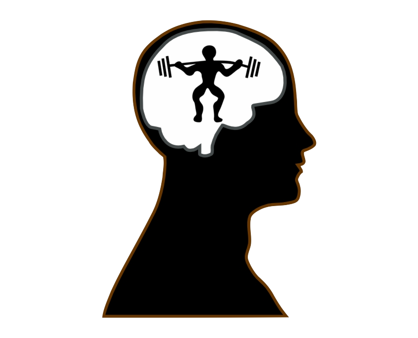

My Mental Practice Guide
2022-04-04
Chapter 1 Mental Practice
1.1 What is Mental Practice?
There are two main types of mental practice. Mental practice can be when you either observe someone else moving (as in a movement demonstration), or when you mentally visualize and rehearse yourself moving your paralyzed or weak muscles. We call these two types of mental practice action observation (AO) and motor imagery (MI), respectively. Mental practice is different from when you physically move your own body, because mental practice does not involve any actual movement. Mental practice can be a useful treatment option, as it helps you to ‘switch on’ your own neural systemand this can enhance your rehabilitation.

1.2 How does mental practice work?
When you do mental practice, important changes are happening in your brain. These changes occur even though you might not see any physical improvements in your movements. This is great news for stroke patients struggling with paralysis who can’t initially get the benefits from physical rehabilitation exercises. Research into mental practice effects in stroke report increased blood flow, increased electrical activity, and even physical changes in the brain areas that support movement. These changes can enhance physical rehabilitation and improve movements of daily living.
Click link for access to research evidence:
The image below summarises the findings from over 1000 brain scanning experiments. This shows how the brain areas involved in movement execution partially overlap with those used during action observation and motor imagery.
 Hardwick, R.M., Caspers, S., Eickhoff, S.B. and Swinnen, S.P., 2018. Neural correlates of action: Comparing meta-analyses of imagery, observation, and execution. Neuroscience & Biobehavioral Reviews, 94, pp.31-44.
Hardwick, R.M., Caspers, S., Eickhoff, S.B. and Swinnen, S.P., 2018. Neural correlates of action: Comparing meta-analyses of imagery, observation, and execution. Neuroscience & Biobehavioral Reviews, 94, pp.31-44.